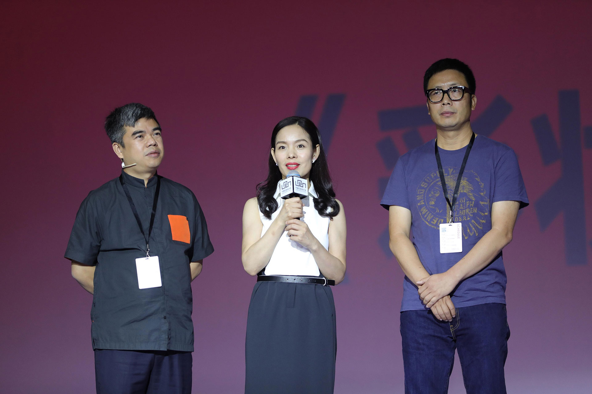

7月22日，2017（第十届）中国化妆品大会主论坛正式拉开帷幕。继5月23日玛丽黛佳品牌、品观网及Winsight@OIB共同发起的“The Red Lab 红研究室”成立后，今日，三方又联合发布了中国首个彩妆购物者的视觉行为研究报告。
OIB.CHINA总经理吴志刚在现场表示，过去三年，Winsight@OIB有幸与玛丽黛佳、品观网、凯度中国一起做了关于彩妆零售的探索和研究。红研究室走到今天，大家一直在思考愿景使命是否要做重新的升级和调整。他非常强烈地意识到，整个市场的发展过程中，中国需要理性的精神驱动这个民族的发展。
吴志刚指出，对于整个中国的零售环境而言，我们遭受到了与以往任何时候完全不同的冲击，这种冲击不仅仅是线上线下的冲击，更多的是两个时代的冲击，两个时代技术的冲击，这种技术极大地改变了竞争态势。
他表示，自己在跟很多零售店沟通交流时发现，大家都有发自内心的焦虑，这种焦虑是源自于两种技术完全不对等的竞争。线上拥有非常先进的零售技术以及数据系统，能够正确地预判消费者行为。而线下，依然停留在刀耕火种的旧零售时代，我们对消费者完全无知。
正是源于这种本质上的思考，吴志刚认为，化妆品行业越来越应该为消费者做点什么。而红研究室的诞生，便也是因这种思考而产生的结果。
据吴志刚介绍，红研究室1.0发现了中国彩妆的诸多现象，2.0里研究了整个中国彩妆销售核心的障碍，即关于BA的效率和效能问题，由此推出了“四必试工作法”，有效地提升了终端门店的彩妆人效。但是走到今天，依然发现彩妆零售过程中还存在一个很难突破的坎儿。
他指出，彩妆是一个极大强调了销售氛围及通过销售空间实现综合效能的产品品类，而今天在整个中国的彩妆零售氛围中，超过80%以上的零售物料、零售关于场的行为是无效的。因此会借用很多先进的零售手段和工具，比如说眼动仪。
“这是在中国第一次应用这个工具，我们希望用这个工具看到消费者的所思所想。”吴志刚表示，通过眼动仪，可尝试走进消费者内心深处，看他们如何在店内购物，如何选择信息，进一步达成购物行为。他希望通过零售的技术拉近线上线下巨大的技术鸿沟，让整个线下零售向理性精神驱动一步。
随后，品观网董事长邓敏、玛丽黛佳品牌总经理陈海军，与吴志刚一同见证了《中国彩妆购物者的视觉行为研究》这一最新报告的发布。

针对报告的发布，陈海军表示，玛丽黛佳有一个梦想，让天下没有难化的妆，这是品牌在产品、渠道、推广方面一直希望达到的结果。不过，彩妆相对于护肤来讲更复杂，在渠道里，对于BA和店主来说，要实现这一目标有很多困难。
因而，玛丽黛佳希望通过整个行业，以及智囊团，包括各个零售商的力量，把科学经验、把彩妆真正落实到门店，让门店受益，同时让消费者真正感受到彩妆的魅力。
据其介绍，2016年玛丽黛佳推出的BA“四必试工作法”在几千家化妆品店开启，可以增加40%的销量。如果说“四必试工作法”解决了BA的态度问题，那今年就需要解决空间的问题，即如何在店内营造彩妆的氛围。
陈海军强调，接下来，玛丽黛佳会将红研究室的研究成果在全国进一步推广，帮助店家把很多彩妆的困难真正克服掉，以此迎来彩妆大的增长和爆发期。对于玛丽黛佳来讲，会致力于把不可能变成可能。
而邓敏则表示，任何一个有情怀的事情，或有使命感的事情，真的需要时间考验。我们行业里的彩妆师很多是缺乏系统性培训的，他们很想提升，但是没有方法。红研究室通过三年时间，给到了他们开放的系统的学习平台。
另外，她指出，优秀的企业真的是要有利他和分享之心。针对行业彩妆的发展，玛丽黛佳跟红研究室这边确实做了很多努力，而且愿意分享。在他们分享的过程中，收获的是大家的信任。这是做企业的人值得去参考的一点。她也相信，红研究室对于中国彩妆的快速增长，一定会带来很大的推动和帮助。
信息
2017年中国化妆品大会
《中国彩妆购物者的视觉行为研究》报告发布
发布时间：2017.7.22